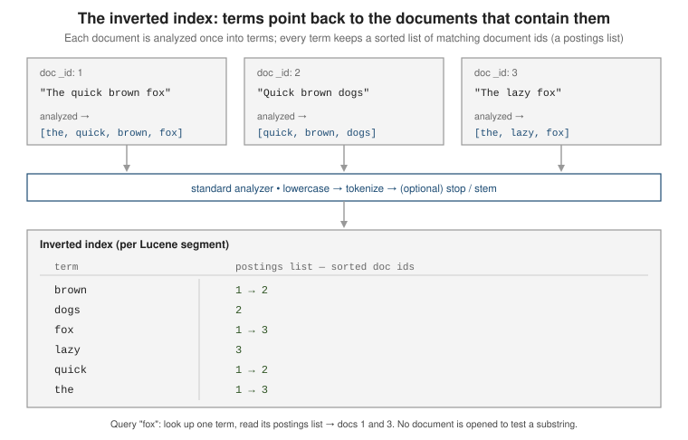

Documents, indices & the inverted index
|
This content was generated with the assistance of AI and should be verified against the official documentation before being relied on in production. |
Elasticsearch stores JSON documents inside an index, and answers queries against an inverted
index built by analyzing those documents into terms. This page covers the shape of a document and
its metadata, what an index is made of and how to create one, how the inverted index makes full-text
search cheap where LIKE is not, and why a freshly indexed document is not instantly searchable.
A document is a JSON object with metadata
A document is the unit you index and retrieve. The JSON you send is stored verbatim as the
_source; Elasticsearch wraps it with metadata fields when you read it back.
GET /books/_doc/1{
"_index": "books",
"_id": "1",
"_version": 2,
"_seq_no": 14,
"_primary_term": 1,
"found": true,
"_source": {
"title": "The Left Hand of Darkness",
"author": "Ursula K. Le Guin",
"year": 1969
}
}| Field | Meaning |
|---|---|
|
The index the document lives in. |
|
Its identifier, unique within the index. You supply it, or let Elasticsearch generate one on |
|
The original JSON body, returned as-is. Disable or trim it via the mapping when storage matters — see Mapping & field types. |
|
Present only when a custom routing value was used to pick the shard; the same value is then required to fetch or update the document. |
|
A monotonic counter bumped on every write. Informational only — it is not the mechanism for optimistic concurrency any more. |
|
The pair used for optimistic concurrency control: pass |
Every document sits under a single implicit type, _doc, which is why the API path is
/books/_doc/1. Before 6.x an index could hold several named mapping types (/books/novel/1,
/books/review/1); mapping types were removed, so today one index holds one kind of document and
separate document shapes go in separate indices. See
Removal of mapping types
and the overview at
Data in: documents and indices.
An index is a collection of documents + settings + mappings
An index groups documents that share a purpose. It bundles three things: the documents themselves, settings (how the index is stored and sharded), and mappings (the field types). Create all three in one call:
PUT /books
{
"settings": {
"number_of_shards": 3,
"number_of_replicas": 1
},
"mappings": {
"properties": {
"title": { "type": "text" },
"author": { "type": "keyword" },
"year": { "type": "integer" }
}
}
}number_of_shards fixes how many primary shards hold the data; it is set once at creation and can
only be changed afterwards by reindexing, splitting, or shrinking. number_of_replicas is the copy
count per primary and can be changed live with PUT /books/_settings. Shard sizing and placement
are covered in Cluster, nodes & shards,
and growth strategy in
Index lifecycle & scaling.
A quick look at what exists, with sizes and health:
GET /_cat/indices/books?v
# health status index uuid pri rep docs.count store.size
# green open books 8mGT... 3 1 842 1.4mbSee Index APIs, Create index API, and cat indices API. Field types themselves are in Mapping & field types.
The inverted index
When a document is indexed, each text field is run through an analyzer that lowercases and
tokenizes it into terms. Elasticsearch stores, for every term, a sorted postings list of the
document ids that contain it. This structure — terms pointing back at documents — is the inverted
index.

GET /books/_search
{
"query": { "match": { "title": "fox" } }
}To answer this, Elasticsearch looks up fox once in the term dictionary and reads its postings
list. It never opens a document to test a substring.
Why this beats LIKE
A relational WHERE title LIKE '%fox%' (see SQL Queries) has a
leading wildcard, so a B-tree index on title is useless and the engine scans every row, running a
substring match on each value. Cost grows linearly with the table.
The inverted index turns the same question into a dictionary lookup. With one million rows
containing perhaps fifty thousand distinct terms, finding fox is a binary search over those fifty
thousand entries; its postings list then names exactly the matching documents. Multi-word queries
intersect or union a handful of postings lists rather than re-scanning text. The index also stores
term frequencies and document counts, so results come back scored by BM25 relevance — something
LIKE cannot express at all. The cost is that matching is term-based: "fox" will not match
"foxes" unless the analyzer stems it, which is the subject of
Text analysis, and exact/substring-style matching on
unanalyzed values is covered in
Term-level queries.
Lucene segments
Each shard is a full Lucene index, physically made of segments: small, immutable inverted indices. A new or updated document is written to a fresh segment; deletes are just a tombstone marking a doc id dead in its segment. A background process merges small segments into larger ones and drops the tombstoned documents. Because segments are immutable, they can be cached and memory-mapped aggressively, but a document only becomes searchable once the segment holding it is opened — which is the next section. See Near real-time search.
Near-real-time search
Elasticsearch is near real-time, not real-time, for search. Indexing a document adds it to an
in-memory buffer; a periodic refresh writes that buffer to a new searchable segment. Until the
next refresh, a _search will not find the document — even though a GET /books/_doc/<id> by id
already returns it, because get reads the transaction log directly.
The default refresh interval is one second, so most applications never notice. When a test or a workflow needs read-your-write visibility, override it per request:
# Block the request until a refresh makes this document searchable (cheapest correct option).
POST /books/_doc?refresh=wait_for
{ "title": "New Arrival", "author": "A. Writer", "year": 2024 }# Force an immediate refresh of the whole shard now. Convenient in tests, wasteful under load.
PUT /books/_doc/2?refresh=true
{ "title": "Second Arrival", "author": "B. Author", "year": 2024 }Omitting refresh (the default false) returns as soon as the document is indexed and lets the
next scheduled refresh pick it up. Prefer wait_for over true in application code: true forces
an out-of-cycle refresh and the extra small segments it creates add merge work. See
the ?refresh parameter.
During a large bulk load the one-second refresh is pure overhead; raising index.refresh_interval
(or setting it to -1) for the duration is a standard tuning step covered in
Performance tuning. Bulk and CRUD mechanics are
in Indexing: CRUD & bulk; if you are just
getting a cluster running, start from
Getting started.